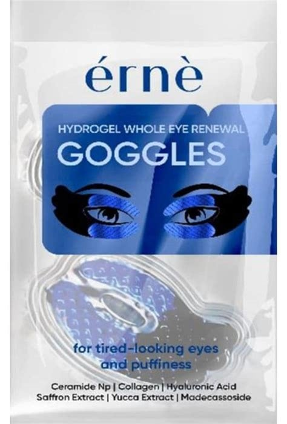
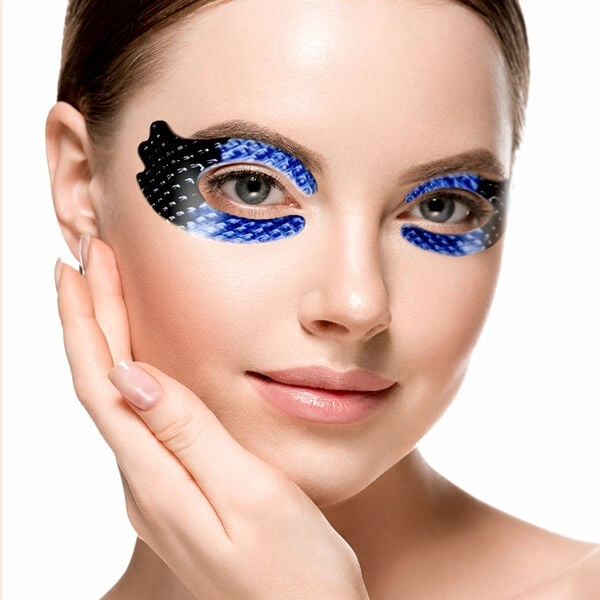
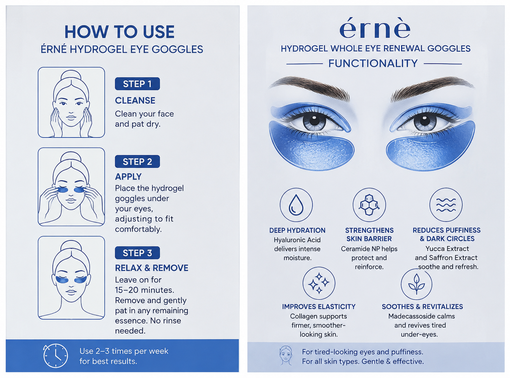

<div> <table style="border-collapse: collapse; width: 99.9809%;" border="1"><colgroup><col style="width: 49.9522%;"><col style="width: 49.9522%;"></colgroup> <tbody> <tr> <td> <div><span style="font-size: 14pt;"><strong>Erne Plasturi cu hidrogel pentru ochi obositi</strong></span></div> <div><span style="font-size: 14pt;"><strong>2 bucati</strong></span></div> <div><span style="font-size: 14pt;">Reda-i privirii tale energia si luminozitatea! Masca inovatoare tip ochelari din hidrogel de la Erne este aliatul perfect impotriva ochilor obositi si a pungilor. Infuzata cu ceramide, colagen, acid hialuronic, extracte de sofran yucca si madecassoside, formula ofera o hidratare profunda, calmare instantanee si un efect intens de revigorare a intregii zone perioculare.</span></div> </td> <td></td> </tr> <tr> <td></td> <td><span style="font-size: 14pt;">Experimenteaza o transformare vizibila a privirii! Masca din hidrogel tip ochelari adera perfect pe zona ochilor, oferind o acoperire completa si un efect racoros. Conceputa pentru a reduce pungile si semnele de oboseala, aceasta lasa pielea instantaneu mai ferma, neteda, intens hidratata si vizibil revigorata.</span></td> </tr> <tr> <td><span style="font-size: 14pt;">O formula eficienta ce ofera hidratare profunda, imbunatateste elasticitatea si reduce vizibil pungile sau cearcanele. Se aplica in jurul ochilor si pentru cele mai bune rezultate, se pastreaza timp de 15 pana la 30 minute.</span></td> <td></td> </tr> </tbody> </table> </div>